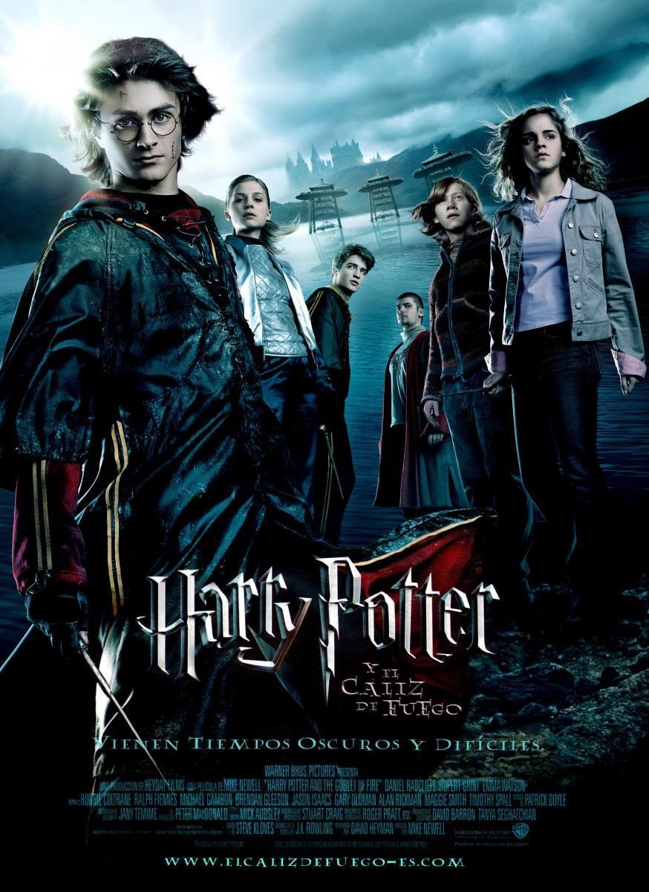

HARRY POTTER Y EL PRISIONERO DE AZKABAN
Harry Potter y el prisionero de Azkaban (título original en inglés, Harry Potter and the Prisoner of Azkaban), es el tercer libro de la serie literaria Harry Potter, escrita por la autora británica J. K. Rowling en 1999.
El libro fue publicado en el Reino Unido el 8 de julio de 1999 por la editorial Bloomsbury y en los Estados Unidos el 8 de septiembre por Scholastic. Este fue el libro que más rápido escribió Rowling, pues lo terminó en tan solo un año después de comenzar a escribirlo. El libro vendió 68 mil copias en sus tres primeros días de lanzamiento en Reino Unido, y desde entonces ha conseguido vender 3 millones más. El libro ganó el premio Whitbread Book Awards (ahora llamados Costa Books Awards) en 1999, el Premio Bram Stoker, el Premio Locus a la mejor novela de fantasía en 2000, entre otros.
El prisionero de Azkaban narra los hechos que suceden a lo largo del tercer curso de su protagonista, Harry Potter, en el Colegio Hogwarts. Aunque en la novela no aparece el antagonista de la serie, lord Voldemort, la trama presenta una nueva situación de riesgo para el personaje central: Sirius Black, uno de los asesinos de Voldemort, se fuga de la prisión de Azkaban para asesinar a Harry y dejar el camino libre para el regreso de su amo al poder. Las autoridades de la comunidad mágica reaccionan ante la noticia cercando el colegio y otros lugares de su jurisdicción con los dementores, criaturas tenebrosas que ofician de carceleros en Azkaban.
HARRY POTTER Y EL CALIZ DE FUEGO

Harry Potter y el cáliz de fuego (título original en inglés, Harry Potter and the Goblet of Fire) es el cuarto libro de la serie literaria Harry Potter, escrita por la autora británica J. K. Rowling en 2000. Ella, antes de que se publicase el libro advirtió que uno de los personajes del libro moriría, dejando mucha especulación acerca de quién podría ser.
Tras la trilogía algo más infantil que son los anteriores tres volúmenes, El cáliz de fuego da paso a una nueva época en la narrativa de J. K. Rowling adoptando temas y un tono más sombrío. El tamaño del libro también aumenta: los primeros tres contenían alrededor de 300 páginas, mientras que, desde Harry Potter y el cáliz de fuego, los libros rondarán las 600.
En el 2005 se realizó una película basada en este libro, dirigida por Mike Newell, primer director inglés que se hace cargo de la saga. La película estuvo protagonizada por Daniel Radcliffe, Emma Watson y Rupert Grint contando además con la participación de actores británicos como Ralph Fiennes, Maggie Smith, Alan Rickman, Robert Pattinson, Brendan Gleeson y Miranda Richardson en el reparto.
J. K. Rowling prometió que sería el libro más largo de la saga, rompiendo su promesa con el quinto volumen. Aparte, el séptimo libro resultó ser más largo también que El cáliz de fuego, pero el quinto libro es el más largo de toda la serie.